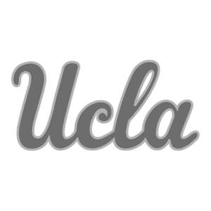
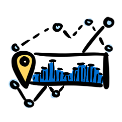
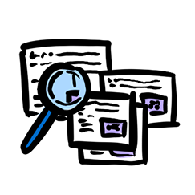
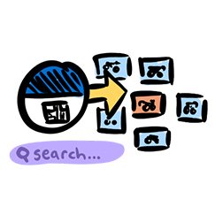
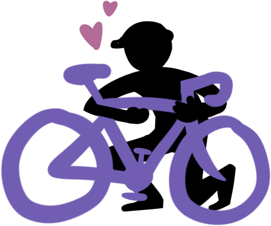

The #1 platform for campus bike management
Bike Index is a comprehensive database and management tool that gives universities real-time metrics, streamlined workflows, and a community-powered recovery platform, so you can keep bikes in students' hands and reduce administrative burden.
Used proudly on campuses nationwide
 CU Boulder
CU Boulder
 Penn State
Penn State
 Stevens Institute
Stevens Institute
 UC Davis
UC Davis
 UC San Diego
UC San Diego

UCLA University of Maryland
University of Maryland
 University of Pittsburgh
University of Pittsburgh
 University of Washington
CU Boulder
Penn State
Stevens Institute
UC Davis
UC San Diego
University of Maryland
University of Pittsburgh
University of Washington
University of Washington
CU Boulder
Penn State
Stevens Institute
UC Davis
UC San Diego
University of Maryland
University of Pittsburgh
University of Washington
Bike Index is the #1 open-source platform for universities to manage bikes and keep them in campus members' hands
All-in-One Database
Streamlined registration, tracking, and impound management with clear workflows for lost and stolen bike cases across all campus departments.
Extensive Tools & Workflows
QR stickers, searchable catalogs, direct messaging, and legacy transfer tools help you modernize operations and reduce administrative burden.
e-Vehicle & Micromobility Management
Manage campus vehicles, including e-personal mobility devices (EPAMDs), by verifying UL certification and centralizing safety documentation.
Easier management, stronger data, smarter campus mobility oversight through:
- Our nationally recognized, trusted platform replaces fragmented or outdated in-house tracking systems
- All-in-One management tool features streamlined reporting and tracking with clear, prescriptive workflows for lost/stolen bike cases
- Reduces administrative burden by improving interdepartmental coordination (campus police, transportation, student services) and aligning your campus with national best practices in bike theft prevention

Greater security, higher recovery potential, and empowered riders:
- Our publicly searchable record of database is the first line of defense against bike theft and makes resale of stolen bikes significantly harder
- Our partnerships with law enforcement, community organizations, and bike shops increase recovery rates
- Secure digital proof of ownership provides peace of mind and creates a proactive step students, faculty, and staff can take to protect their investment
Comprehensive tools for every scenario

All-in-One Database
Staff can access the same information on bikes, locations, and updates, fostering seamless collaboration.

Searchable Catalog
Quickly find bike details and contact information for cyclists.
Direct Messaging
Communicate with students and faculty regarding their bikes and track message history.

Alerts & Recovery Network
Issue alerts about maintenance, theft recovery, and more utilizing our national network.
Impound Bikes With Ease
Impound bikes in the field or from your dashboard and create a public searchable database.

Legacy Transfer
Import existing bike registrations into Bike Index for continuity and ease of use.
Graduate Bikes
Automatically remove bikes that are no longer on campus from your system.

QR Code Stickers
Permit, track and message bike owners quickly and easily with scannable stickers.
Testimonials
"Among other options, Bike Index really stands out for their commitment to creating tailored, accessible solutions, and their nonprofit, advocacy ethos."

"We're excited to partner with Bike Index to provide Centre Region cyclists with a more intuitive and effective bike registration and recovery service."

"It comes down to efficiency. The Bike Index features allow a university bike program to operate more efficiently and in a more timely manner. That's important when it comes to students' bikes at a large university."

Ready to modernize your campus bike program?
Join 1,800+ organizations using the world's most widely used bike registration network.